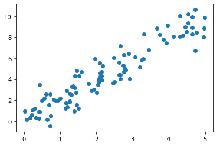
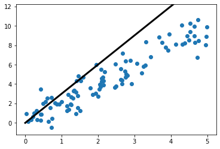

Vidyasagar Bhargava
April 13, 2021
import seaborn as sns import matplotlib.pyplot as plt import ipywidgets as widgets from IPython.display import display
cars = sns.load_dataset('mpg') def bandwidth_widget(bw=0.20): sns.kdeplot(cars.horsepower, lw=3, fill=True, bw_adjust=bw) plt.xlim(-30, 300) plt.ylim(0, 0.03);
widgets.interact(bandwidth_widget, bw=(.1, 3));
widgets.IntSlider()
import numpy as np x = np.random.uniform(0, 5, size=100) ep = np.random.normal(size=100) y = 2*x + ep
plt.scatter(x, y);

x_values = np.linspace(0, 5, 1000)
def slope_viz(m=1): plt.scatter(x, y) plt.plot(x_values, m*x_values, lw=3, color='black') plt.ylim(-1.2, 12.2);
slope_viz(m=3)

widgets.interact(slope_viz, m=(0.2, 5, 0.2))
<function __main__.slope_viz(m=1)>
from ipyleaflet import Map, Marker, basemaps, basemap_to_tiles m = Map( basemap=basemap_to_tiles( basemaps.NASAGIBS.ModisTerraTrueColorCR, "2017-04-08" ), center=(52.204793, 360.121558), zoom=4 ) m.add_layer(Marker(location=(52.204793, 360.121558))) m
import plotly.express as px import plotly.io as pio df = px.data.iris() fig = px.scatter(df, x="sepal_width", y="sepal_length", color="species", marginal_y="violin", marginal_x="box", trendline="ols", template="simple_white") fig.show()